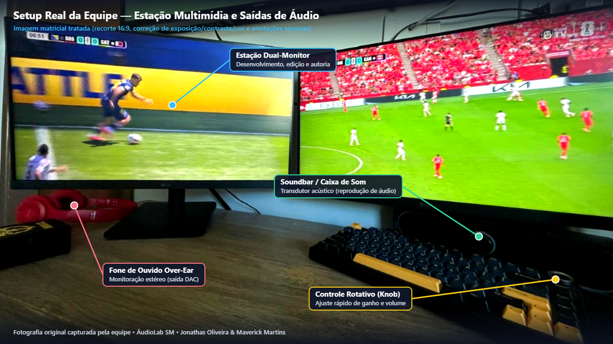
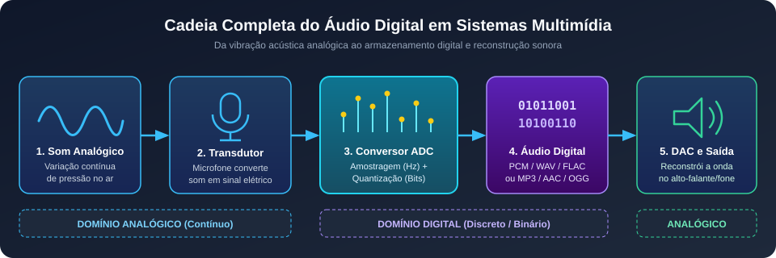
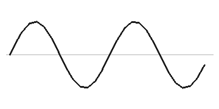
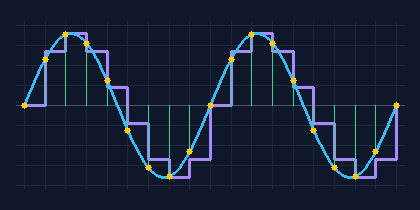
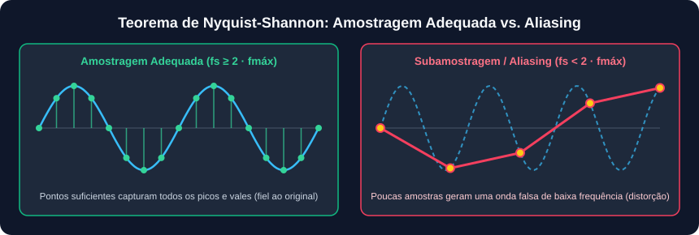
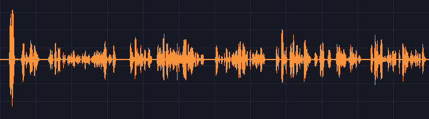
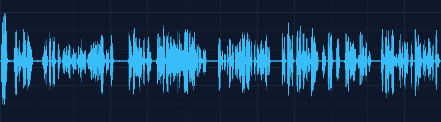
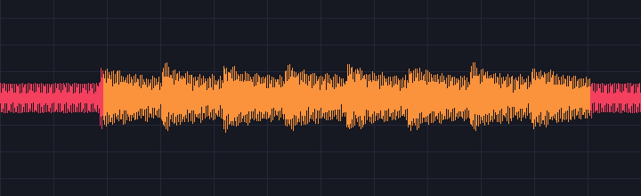
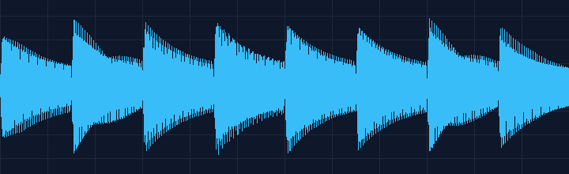

Áudio Digital para Sistemas Multimídia
Bem-vindo ao ÁudioLab SM! Explore livremente qualquer módulo na ordem que preferir: entenda como o som analógico é capturado, digitalizado, tratado, comprimido e sintetizado em MIDI, interaja com simuladores ao vivo e teste seus conhecimentos no Quiz multimídia.
🎙️ Boas-Vindas Narradas (Voz Original do Grupo)
Ouça a apresentação do ÁudioLab SM gravada pela equipe e tratada com filtro passa-alta, equalização, compressão dinâmica e normalização:
🎯 Todas as 6 Mídias Originais Integradas
Clique em qualquer mídia abaixo para ir diretamente ao módulo onde ela é demonstrada (incluindo versão não editada e editada):
1. Captura & Cadeia ADC/DAC
Explore o setup de gravação com slider Antes/Depois e o diagrama vetorial completo da digitalização.
2. Amostragem, Nyquist & Vídeo
Simulador animado interativo de Aliasing e Quantização, animação GIF e mini-aula em vídeo.
3. Tratamento & Formatos
Ouça áudio bruto vs. tratado, compare 44,1 kHz, 8 kHz e 4 bits, e calcule bitrate de arquivos.
4. Música MIDI na Prática
Player MIDI nativo com Piano Roll ao vivo, controle de BPM sem distorcer tom e mute por faixa.
5. Glossário & Vitrine Antes/Depois
Busque termos técnicos e visualize todas as 6 mídias originais lado a lado (bruto vs. tratado).
QUIZ Interativo Multimídia
Base de 20 questões (com áudio e diagramas), sorteio aleatório de 5+ perguntas e percentual de acerto.
Captura Sonora e Cadeia de Digitalização
O som no mundo real é uma onda mecânica contínua (analógica). Para que um sistema multimídia armazene e manipule áudio, é preciso capturá-lo com um transdutor (microfone) e convertê-lo em bits via ADC.
📷 Imagem Matricial: Setup de Captura (Antes vs. Depois)
Arraste o controle abaixo para comparar a fotografia original não editada (foto_setup_bruta.jpg)
com a imagem matricial tratada (foto_setup_editada.png — recorte 16:9, balanço de brilho/contraste/saturação e anotações técnicas dos equipamentos).

ANTES (Não editada) DEPOIS (Tratada + Anotada)🎨 Imagem Vetorial (SVG): Cadeia Analógico → Digital → Analógico
Diferente das imagens matriciais (grade de pixels), desenhos vetoriais em SVG são definidos por equações geométricas e mantêm nitidez perfeita em qualquer ampliação.

✨ Animação Vetorial (SVG): Sinal em Movimento
Observe os pulsos contínuos entrando no ADC, transformando-se em pacotes binários (10110) e sendo reconstruídos no DAC:
Amostragem (Nyquist), Quantização e Mini-Aula em Vídeo
Digitalizar som exige discretizar dois eixos: o tempo (Taxa de Amostragem em Hz) e a amplitude (Profundidade de Bits). Experimente o simulador animado abaixo e assista à mini-aula!
🧪 Simulador Animado Interativo: Amostragem, Aliasing e Quantização
Reduza a Taxa de Amostragem para menos do dobro da frequência do sinal e veja o Aliasing surgir ao vivo! Ou diminua os Bits e clique em Ouvir Som Quantizado.
🎞️ Animação Exportada (GIF): Antes vs. Depois
Comparação entre o rascunho animado quadro a quadro em baixa fluidez (4 FPS) e a animação final suavizada (20 FPS) com grade de quantização e amostras discretas:


🎬 Vídeo Educacional: Como o Som Vira Bits (Bruto vs. Editado)
Alterne entre a captura de vídeo bruta (sem corte, com ruído e sem legendas) e a mini-aula editada (com abertura, animações sincronizadas, legendas didáticas e trilha sonora):
📐 Diagrama Vetorial: Nyquist vs. Aliasing

Tratamento de Áudio, Taxas e Compressão
Ouça na prática a diferença entre uma captura bruta e um áudio tratado (redução de ruído, corte de silêncio e normalização), compare resoluções digitais e calcule o tamanho de arquivos PCM, FLAC e MP3.
🎙️ Narração Original do Grupo: Antes e Depois do Tratamento
Gravação real da voz da equipe comparando o arquivo bruto capturado com a versão tratada (corte de silêncio, filtro passa-alta 85 Hz, realce de presença em 3,2 kHz, compressão dinâmica 3:1 e normalização a -1 dBFS):

Dinâmica irregular: pico inicial muito alto enquanto o corpo da fala permanece com volume reduzido e sem equalização.

Voz nivelada, limpa e mais inteligível: silêncios aparados, graves indesejados filtrados e volume consistente em toda a fala.
🧪 Teste na Própria Voz: Efeito de Amostragem e Quantização
Qualidade de CD: voz nítida e natural.
Taxa reduzida a 8 kHz: som abafado de ligação telefônica.
Apenas 16 degraus de amplitude: forte chiado de quantização.
🔊 Amostra Musical Digitalizada: Remoção de Ruído de 60 Hz

Problemas: 0,8s de silêncio com ruído no início (destacado em vermelho), zumbido de rede elétrica (60 Hz), chiado constante e amplitude baixa.

Tratamento aplicado: corte dos trechos ociosos, remoção do ruído/zumbido e normalização de pico para -1 dBFS (sem clipping).
👂 Laboratório Auditivo: Efeito da Taxa de Amostragem e dos Bits
Dê play nas 3 versões do mesmo trecho musical para ouvir o impacto real de cada parâmetro:
65.536 níveis de amplitude e resposta até ~22 kHz. Som limpo e brilhante.
Qualidade de telefonia: perde os harmônicos agudos (limite de Nyquist cai para 4 kHz).
Apenas 16 níveis de amplitude: gera forte chiado granulado (erro de quantização).
🧮 Calculadora de Bitrate e Comparativo de Formatos
Fórmula PCM: Bitrate = Taxa de Amostragem × Profundidade de Bits × Canais
| Categoria | Formatos | Característica Principal | Uso Ideal |
|---|---|---|---|
| Sem Compressão | WAV, AIFF (PCM) | Guarda todas as amostras brutas sem redução. | Gravação, edição e masterização. |
| Compressão Sem Perdas | FLAC, ALAC | Reduz ~40–50% mantendo 100% dos bits originais. | Arquivamento e streaming Hi-Fi. |
| Compressão Com Perdas | MP3, AAC, OGG, Opus | Usa psicoacústica para descartar frequências menos audíveis. | Streaming web, podcasts, jogos e apps. |
Música MIDI vs. Áudio Digitalizado
Um arquivo MIDI (.mid) não guarda a gravação do som, mas sim uma partitura digital com eventos (nota ligada/desligada, intensidade/velocity, canal e instrumento). Por isso ocupa apenas ~1 KB e permite alterar BPM e faixas em tempo real!
🎹 Player MIDI Nativo com Visualizador Piano Roll
⚖️ Comparativo Direto: MIDI vs. WAV
| Critério | Áudio Digitalizado (WAV / MP3) | Música MIDI (.mid) |
|---|---|---|
| O que armazena? | Amostras da forma de onda sonora. | Instruções simbólicas (notas, duração, velocity, timbre). |
| Tamanho típico (este projeto) | amostra_tratada_limpa.wav ≈ 352 KB (4s) | trilha_completa.mid ≈ 1,0 KB (32s, 3 faixas!) |
| Grava voz humana? | Sim, qualquer som acústico. | Não — apenas instrumentos/sintetizadores controláveis. |
| Mudar BPM sem distorcer tom | Exige processamento DSP complexo. | Nativo e instantâneo (teste no slider acima!). |
Glossário Técnico & Vitrine das 6 Mídias Originais
Pesquise qualquer conceito de áudio digital e confira o resumo completo de todas as mídias produzidas (não editadas e editadas) entregues junto ao protótipo.
📋 Inventário das 6 Mídias Obrigatórias (Bruto vs. Editado)
| Tipo de Mídia | Material Não Editado (Bruto) | Material Editado (Final) | Acesso |
|---|---|---|---|
| 1. Imagens Matriciais | foto_setup_bruta.jpgforma_onda_bruta.png |
foto_setup_editada.pngforma_onda_editada.png |
|
| 2. Imagens Vetoriais | cadeia_audio_rascunho.svgnyquist_rascunho.svg |
cadeia_audio_final.svgnyquist_final.svg / logo_audiolab.svg |
|
| 3. Áudio Digitalizado | narracao_bruta_original.ogg / narracao_bruta.wavamostra_bruta_com_ruido.wav |
narracao_editada.wav (+ 8kHz e 4-bit)amostra_tratada_limpa.wav (+ comparações) |
|
| 4. Música MIDI | trilha_rascunho.mid (1 faixa) |
trilha_completa.mid (3 faixas) |
|
| 5. Vídeo | video_bruto.webm |
video_editado.webm |
|
| 6. Animação | animacao_onda_bruta.gif (4 FPS) |
animacao_onda_editada.gif (20 FPS) + animacao_fluxo_adc.svg + Canvas |
📖 Glossário Interativo de Áudio Digital
QUIZ Interativo — Áudio Digital
Teste seus conhecimentos com perguntas sorteadas aleatoriamente de uma base de 20 questões (incluindo múltipla escolha, verdadeiro/falso, questões auditivas com áudio real e questões visuais com diagramas). Ao final, veja seu percentual de acerto!
🎲 Configurar Nova Rodada
A cada execução, o sistema sorteia perguntas diferentes da base de 20 questões (mínimo obrigatório: 5 perguntas).